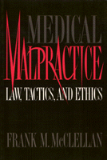

<body bgcolor="#FFFFFF" text="#000000" link="#0000FF" vlink="#CC0000" alink="#CC0000"><center><hr width="350" size="1" align="center" noshade>An experienced litigator lays out the essential issues<hr width="350" size="1" align="center" noshade><p><a href="https://cdcshoppingcart.uchicago.edu/Cart/ChicagoBook.aspx?ISBN=9781566390651&&PRESS=temple" target="_top">Buy this book!</a> | <a href="https://cdcshoppingcart.uchicago.edu/Cart/Cart.aspx?PRESS=temple" target="_top">View Cart</a> | <a href="https://cdcshoppingcart.uchicago.edu/Cart/Cart.aspx?PRESS=temple" target="_top">Check Out</a></p><p></p></center><!--none//--><h1>Medical Malpractice</h1>
<H2>Law, Tactics, and Ethics</H2>
<h3>Frank M. McClellan</h3>
<P>cloth 1-56639-065-6 $89.50, Nov 93, <FONT COLOR=#990033>Available</FONT>
<br>paper 1-56639-066-4 $41.95, Nov 93, <FONT COLOR=#990033>Available</FONT>
<br>Electronic Book 1-43990-384-0 $41.95 <FONT COLOR=#990033>Available</FONT>
<BR> 328 pp
6x9
</P><h3 align="center"><P><font color="#996633">Philadelphia Book Clinic Certificate of Award,
1995</font></P>
</H3>
<p>From practical to philosophical considerations, this succinct, clear presentation of medical malpractice issues is a valuable resource for the classroom and the reference shelf. Frank M. McClellan illustrates the multitude of considerations that impact the merit of each case, never losing sight of the importance of preserving human dignity in malpractice lawsuits.
<p>Early chapters urge the evaluation of legal, medical, and ethical standards, especially the Standard of Care. Part II focuses on assessing and proving compensatory and punitive damages, Part III sets out guidelines for intelligence gathering, medical research, choosing expert witnesses, and preparing for trial.
<p>Students of law, medicine, and public health, as well as lawyers and health care professionals, will find in <I>Medical Malpractice</I> a valuable text or reference book. "Problems" in twelve of the thirteen chapters illustrate the range of issues that can arise in malpractice suits. An appendix lists leading cases that have shaped medical malpractice law.
<BR>&nbsp;<h2>Contents</h2><P>
<p>Preface
<br>Acknowledgments
<p><b>Part I: Legal, Medical, and Ethical Standards</b>
<br>1. Threshold Considerations: When Doctors and Patients Collide
<br>2. The Lawyer's Duty of Care
<br>3. The Common Law of Medical Malpractice
<br>4. Discovering and Proving the Standard of Care in a World of Specialization
<br>5. Economics, Ethics, and the Standard of Care: Emerging Issues
<br>6. Tort Reform: Legislation, Courts, and State Constitutions
<p><b>Part II: Assessing and Proving Damages</b>
<br>7. Assessing and Proving Compensatory Damages
<br>8. Punitive Damages: Goals and Standards
<p><b>Part III: Gathering Evidence and Developing Strategies</b>
<br>9. Obtaining and Reviewing Medical Records
<br>10. Choosing and Using an Effective Expert Witness
<br>11. Special Problems Related to Therapeutic Drug-Induced Injuries
<br>12. Multiple Parties: Issues, Concerns, and Strategies
<br>13. Preparing for Trial: Integrating Law and Medicine
<p>Appendix
<br>Notes
<br>Suggested Readings in Case Law
<br>General Index
<br>Index of Cases
</P><BR>&nbsp;<H2>About the Author(s)</H2>
<P><b>Frank M. McClellan</b> is a litigator and law professor at the Temple University School of Law.</P>
<BR><H2>Subject Categories</H2>
<p><A HREF="/tempress/law.html" TARGET="_top">Law and Criminology</a>
<BR><A HREF="/tempress/health.html" TARGET="_top">Health and Health Policy</a>
</p>
<p align="center"><a href="https://cdcshoppingcart.uchicago.edu/Cart/ChicagoBook.aspx?ISBN=9781566390651&&PRESS=temple" target="_top">Buy this book!</a> | <a href="https://cdcshoppingcart.uchicago.edu/Cart/Cart.aspx?PRESS=temple" target="_top">View Cart</a> | <a href="https://cdcshoppingcart.uchicago.edu/Cart/Cart.aspx?PRESS=temple" target="_top">Check Out</a></p><p><font face="Arial" size="1"><a href="copyright.html" onMouseOver="window.status='Web Copyright Policy';return true;" onMouseOut="window.status=''" title="Web Copyright Policy">&copy;</a> 2015 <a href="http://www.temple.edu" target="new" onMouseOver="window.status='Link to Temple University home page';return true;" onMouseOut="window.status=''" title="Link to Temple University home page">Temple University</a>. All Rights Reserved. http://www.temple.edu/tempress/titles/908_reg.html</font></p>